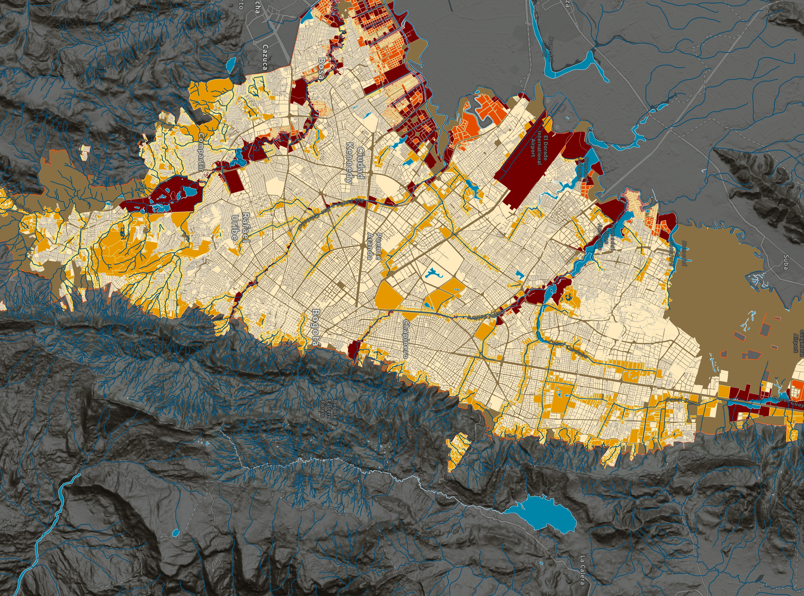
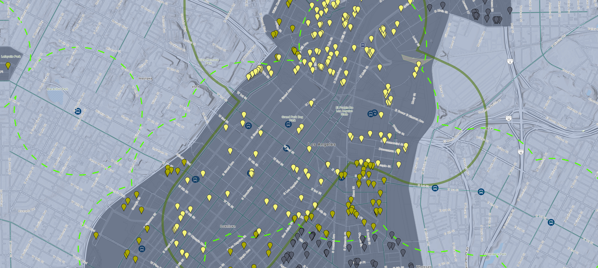
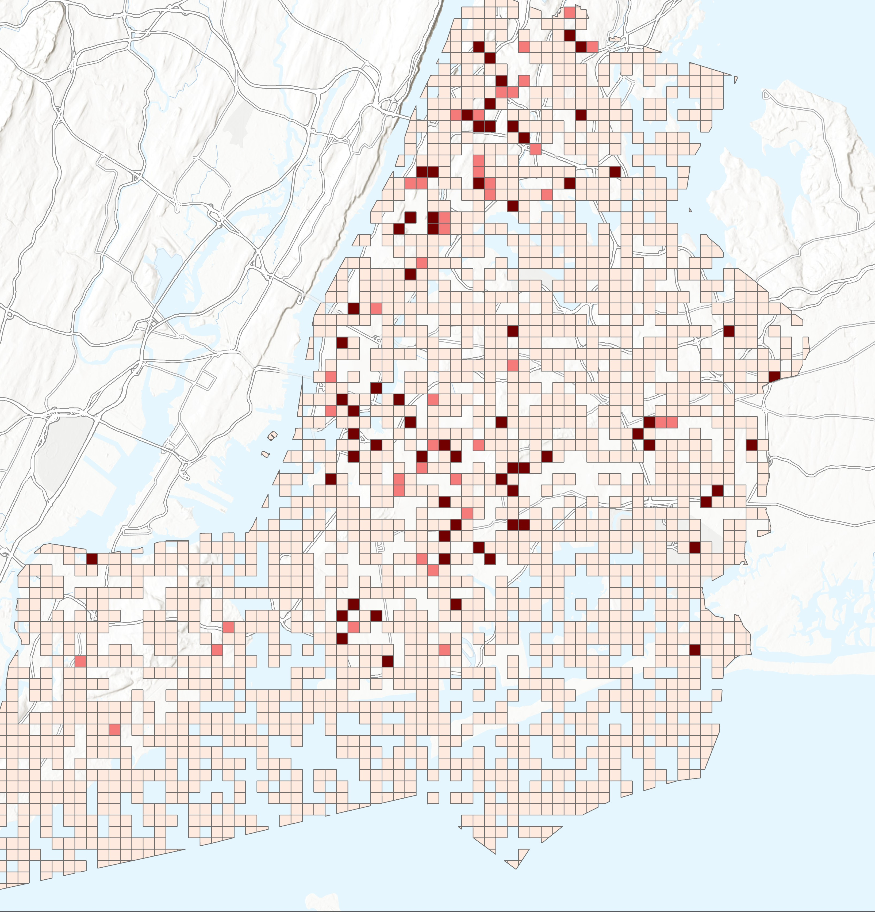
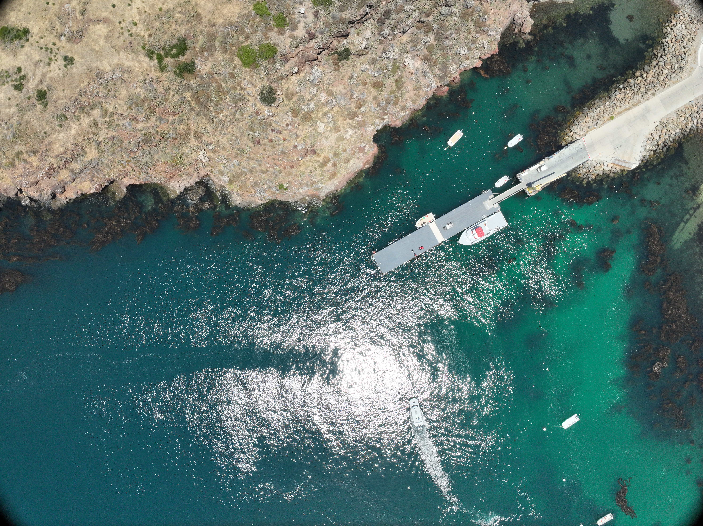

✕
PORTFOLIO
MENU
ALL PROJECTS →
ABOUT →
LinkedIn
CONTACT
JUAN SEBASTIAN
CORTES
PORTFOLIO
Vanishing Clouds — Colombia's Páramo Crisis
Interactive web atlas mapping the accelerating decline of Colombia's páramo ecosystems through biodiversity occurrence records, land-cover change (1986–2024), fire detection, and a conservation urgency index — built with Leaflet.js, GBIF, NASA FIRMS, and MapBiomas.
Explore →
Post-Fire Water Infrastructure Assessment
GIS-based inventory and mapping of over 1,000 water meters to assess post-fire damage and support FEMA funding documentation.
Read More →
Marshall Fire ABM — Wildfire Spread Simulation
Agent-based model of the 2021 Marshall Fire using NetLogo and real GIS data to simulate wildfire spread, fuel flammability, and firefighter suppression across Boulder County, CO.
Read More →
Colombia Amphibian Explorer
Interactive web map cataloguing 24 amphibian species across Colombia, integrating GBIF occurrence data, IUCN conservation status, and temporal filtering to visualize biodiversity distribution.
Read More →
Seattle Water Main Risk Modeling Tool
Automated Python script tool for ArcGIS Pro generating a composite failure risk index (RISK_IDX) for every water main segment in Seattle using pipe age, material, diameter, pressure class, and relining history.
Read More →

Bogotá Flood Hazard Risk Analysis
Block-level flood hazard classification for Bogotá using GeoPandas and a custom ArcGIS Pro Python toolbox — combining overflow and levee-failure hazard polygons with a 100m hydrology buffer to assign four risk categories across all urban blocks.
Read More →
Childcare Accessibility in San Francisco
Two-Step Floating Catchment Area (2SFCA) analysis mapping childcare access inequality across 997 census blocks using a 10-minute driving catchment, ArcGIS Pro Closest Facility solver, and supply-demand ratio scoring for children ages 0–5.
Read More →

DTLA Adaptive Reuse — Research + Tool
Award-winning APCG conference research and ArcGIS Pro Python toolbox scoring parcel-level building reuse readiness in Downtown LA using transit, bicycle, and open-street proximity buffers.
Read More →

Fatal Police Encounters in New York City
Point pattern analysis of fatal police encounters across NYC's five boroughs using Kernel Density Estimation, Ripley's K function, population-normalized inhomogeneity adjustment, and MAUP fishnet sensitivity testing in ArcGIS Pro.
Read More →
Understanding the Geography of Noise
Spatial econometrics study of 311 noise complaint data across 2,498 Los Angeles census tracts, using Moran's I, LISA cluster detection, and OLS/SLM/SEM regression to map environmental noise inequality.
Read More →

Catalina Island Coastal Erosion
Drone photogrammetry and USGS LiDAR DEM differencing to track 10 years of shoreline change at Fishermans Cove, USC Wrigley Institute — published as an ArcGIS StoryMap.
Read More →
Browns Canyon Terrain & Watershed Analysis
Multi-scale terrain and hydrologic modeling of Browns Canyon Wash using 1m, 10m, and 30m USGS DEMs — comparing hillshade, slope, aspect, and watershed delineation outputs across three spatial resolutions in ArcGIS Pro.
Read More →